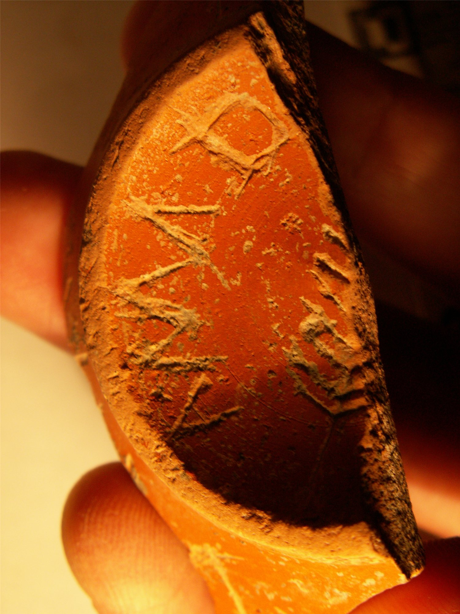
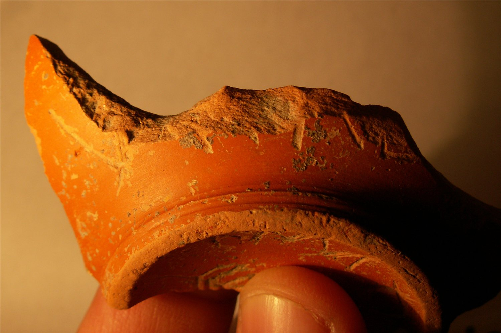

pompelo-017-palma
Grafito de palma sobre cerámica pigmentada (Pompelo, Plaza del Castillo, Pamplona, Navarra)
Pompelo (Pamplona, Navarra), Hispania citerior · s. II d.C.



Texto
Palma (fragmento)1V[- - -]
2ANMD[- - -]
2ANMD[- - -]
Otras lecturas posibles
- ANNAD[- - -]
- AMM D[- - -]
Comentario
Es el único dibujo de palma asociado a dos inscripciones: una V[---] localizada cerca del pie, y otra ANMD[---] localizada en la base, rodeando al grafito de palma.
En el artículo de 2009 (nº 10) se publicó ya la parte epigráfica: la inscripción de la base es circular y fragmentada en torno a una palma. Los autores optan por la lectura ANMD, pero no pueden rechazar ANNAD ni AMM D, ya que las ligaduras pueden ser varias.
Descripción
- Soporte
- Fragmento de fondo de 4 cm de Ø, que corresponde a un vaso de cuerpo inferior globular, de cerámica pigmentada. Barniz naranja intenso de buena calidad.
- Disposición
- Localización del grafito: En la base de la pieza.
- Descripción del grafito
- Fragmento de dibujo de palma.
- Datación
- s. II d.C.
- Lugar de origen
- Pompelo (Pamplona, Navarra), Hispania citerior
- Hallazgo
- Excavación de la Plaza del Castillo de Pamplona (2001-2003), sector 3. Según el contexto general de la excavación, las piezas aparecieron en un barrio artesanal. Los estratos están revueltos y no hay estratigrafía válida para fechar las piezas: la datación se basa en las formas cerámicas.
- Ubicación actual
- Almacén de Arqueología del Gobierno de Navarra
Bibliografía
- P. Ozcáriz Gil; M. Unzu, «Grafitos figurativos, palmas, tridentes y otros signos en cerámica romana de la Plaza del Castillo de Pamplona», Príncipe de Viana 253 (2011), pp. 79-95.
- M. Unzu; P. Ozcáriz Gil, «Grafitos nominales de la Plaza del Castillo de Pamplona», Los vascones de las fuentes antiguas: en torno a una etnia de la antigüedad peninsular (2009), pp. 499-512.